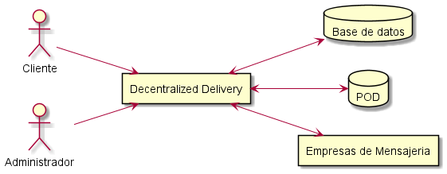
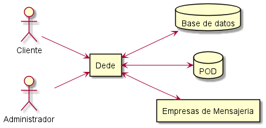
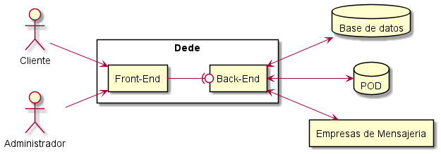
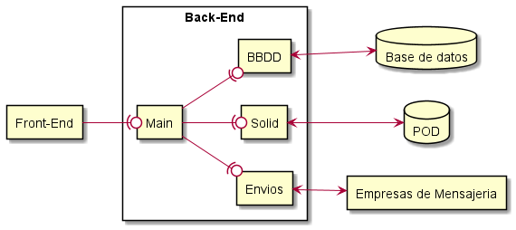
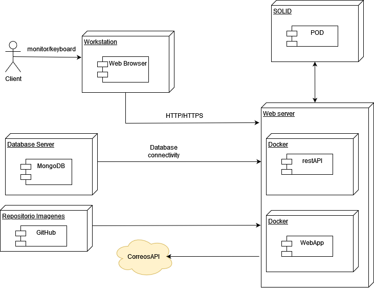

1. Introducción y Metas
El proyecto consiste en una aplicación de compra-venta de playeros, llamada DeDe, cuyo código fuente ha sido realizado con "TypeScript". Está enfocada al mercado electrónico y da soporte a la realización de pedidos asociados a una cuenta de usuario.
Objetivos de Negocio:
-A corto plazo: Realizar una documentación adecuada de manera que se cumplan las expectativas y necesidades del proyecto. -A largo plazo: Poder realizar una aplicación de manera que cumpla todos los objetivos de usabilidad para poder realizar compra/venta de playeros de una manera más cómoda, sencilla y accesible.
1.1. Vista de Requerimientos
-Se necesitará una pequeña base de Typescript para la implementación de código de la aplicación y el uso de React para la implementación de cara al usuario. -Para realizar el control de versiones es necesario el uso de git, herramienta muy útil para trabajos de gran tamaño permitiendo el uso de varias ramas para no alterar los prototipos del proyecto. -Será necesario emplear un navegador y disponer de un proveedor de internet para poder acceder a dede_es3a_bis2 y utilizar toda la funcionalidad de la que dispone. -El sistema permitirá al usuario realizar una búsqueda mediante la que filtrar los artículos mostrados según su nombre. -Dede_es3a_bis2 dispondrá de un carrito en el que almacenar productos y cuyo contenido podrá ser consultado por el usuario. -Dede_es3a_bis2 dará al usuario la posibilidad de añadir elementos al carrito. -Dede_es3a_bis2 dará al usuario la posibilidad de borrar elementos del carrito. -Dede_es3a_bis2 permitirá el registro de usuarios mediante formulario siempre y cuando el usuario no sea existente. -Dede_es3a_bis2 permitirá el registro de usuarios mediante formulario si las credenciales coinciden con la BBDD. -Dede_es3a_bis2 dispondrá de uan lista de pedidos por usuario en la que se almacenará los pedidos realizados por el mismo.
1.2. Metas de calidad
| Meta de Calidad | Motivación | Prioridad del ED | Prioridad del Cliente |
|---|---|---|---|
Seguridad |
Aplicación protegerá los datos y la privacidad del usuario |
Alta |
Alta |
Usabilidad |
Aplicación entendida, aprendida y usada siendo atractiva para el usuario |
Alta |
Alta |
Escalabilidad |
Aplicación seguirá funcionando correctamente incluso cuando aumente el .º de usuarios |
Alta |
Alta |
Accesibilidad |
Aplicación utilizable por el máximo n.º de personas independientemente de sus capacidades |
Media |
Alta |
Interoperabilidad |
Aplicación intercambia datos con un formato concreto |
Media |
Media |
1.3. Partes interesadas (Stakeholders)
| Role/Name | Expectations |
|---|---|
Administradores |
Realizar una administración cómoda y sin inconvenientes. |
Equipo de desarrollo |
Obtención de una aplicacíon correcta, accesible y usable. |
Cliente |
Realización de una compra en la aplicación de una manera sencilla y accesible. |
Stakeholders primarios:
Equipo de desarrollo: Debe conocer la arquitectura de TypeScript, React y Solid. Debe trabajar de manera que se documente todo el código para facilitar el entendimiento por parte de terceros.
Cliente: Quien interactuaría con la version final de la aplicacíon para la realización de compra de Objetos.
2. Restricciones de la Arquitectura
2.1. Restricciones técnicas
| Restricción | Descripción |
|---|---|
React |
Desarrollo del front-end de la aplicación. |
TypeScript |
TypeScript es un lenguaje de programación, superconjunto de JavScript, que añade tipos estáticos y objetos basados en clases. |
SOLID |
Permite a los usuarios almacenar su información en almacenes de datos descentralizados (Pods). |
Git |
Subir código a repositorio remoto en GitHub. |
PlantUML |
Herramienta de código abierto que permite la creación de diagramas a partir de un lenguaje de texto sin formato. |
Draw.io |
Herramienta de diagramación de forma gráfica. |
MaterialUI |
Biblioteca de código abierto que implementa un lenguaje visual de "materiales" de Google en sus componentes React. |
Heroku |
Plataforma utilizada para desplegar la aplicación en la nube. |
2.2. Restricciones de negocio
| Restricción | Descripción |
|---|---|
Equipo |
El equipo está formado por 1 persona (UO270149). |
Horarios |
Soy estudiante de 4º año con más asignaturas y obligaciones. |
Límite de tiempo |
La entrega forma parte de la evaluación extraordinaria de la asignatura, el mismo día que el examen teórico. |
Conceptos |
Es necesario utilizar React, SOLID y TypeScript para el desarrollo de la aplicación. |
3. Alcance y Contexto del Sistema

-
Cliente
Usuarios finales de la aplicación. Son los clientes que van a realizar las compras.
-
DeDe
Sistema de venta online de playeros (Decentralized Delivery)
-
Base de datos
Se guardará aquí toda la información necesaria para el funcionamiento de la aplciación: pedidos de los usuarios, productos, fotos, etc.
-
POD
El sistema se conectará con el POD del usuario para obtener los datos de su dirección, ya que por privacidad no se almacenarán estos datos en nuestra aplicación.
-
Empresas de Mensajería
Nuestro sistema se conectará con diferentes empresas de mensajería para poder calcular los costes de envío de los pedidos.
3.1. Contexto técnico
Para el desarrollo de este proyecto viene impuesta como restricción el uso de React, TypeScript y SOLID. No hay imposición en cuanto a la base de datos a utilizar. Se ha decidito optar por seguir la arquitectura MERN. Es un conjunto de marcos/tecnologías utilizados para el desarrollo web de aplicaciones que consta de MongoDB, React, Express y Node.js como sus componentes.
Para el Front-End se ha utilizado React, una librería desarrollada y mantenida por Facebook. El elemento más importante de React es el componente, que es en esencia una pieza de la interfaz de usuario. Al diseñar una aplicación con React, lo que estamos haciendo es crear componentes independientes y reusables que nos permiten crear interfaces de usuario más complejas.
El uso de MongoDB como base de datos supone una ventaja, debido a que en otras asignaturas de la carrera como SDI ya se ha utilizado esta plataforma.
Node.js es un entorno de ejecución que permite la ejecutar programas escritos en JavaScritp. Utiliza una arquitectura de E/S basada en eventos y sin bloqueos, lo que ayuda a que la aplicación sea escalable y rápida.
Express es un framework para crear aplicaciones web, APIs y web services. Así como Node.js está destinado a ejecutar JavaScript del lado servidor, pero no para desarrollar sitios web, Express está destinado a esto precisamente.
Para conseguir la máxima disponibilidad de la aplicación en lugar de usar servidores propietarios se desplegará en la nube mediante el uso de Heroku.
La privacidad de los datos de los usuarios se garantizará con la utilización de SOLID, que es una especificación que permite a los usuarios guardar sus datos en almacenes descentralizados llamados PODs.

- Motivación
-
Diagrama de alcance y contexto de la aplicación.
- Bloques de construcción contenidos
-
-
DeDe: Sistema de venta online de playeros (Decentralized Delivery)
-
Base de datos: Almacén de información necesaria para el funcionamiento de la aplicación: pedidos, productos, fotos, etc.
-
POD: El sistema se conectará con el POD del usuario para obtener los datos de su dirección, ya que por privacidad no se almacenarán estos datos en nuestra aplicación.
-
Empresas de Mensajería: Nuestro sistema se conectará con diferentes empresas de mensajería para poder calcular los costes de envío de los pedidos.
-
- Interfaces importantes
-
-
Para conectar con las diferentes empresas de mensajería se utilizarán las APIS que suministren los servicios correspondientes.
-

- Motivación
-
Detalle de la aplicación Dede.
- Bloques de construcción contenidos
-
-
Front-End: Interfaz de usuario. Se utiliza React.
-
Back-End: Implementa la lógica de negocio de la aplicación.
-
- Interfaces importantes
-
-
Existirá una API que comunique el Back-End y el Front-End.
-

- Motivación
-
Detalle de la división en módulos del Back-End.
- Bloques de construcción contenidos
-
-
Main: Módulo principal del Back-End. Comunica el Front-End con los módulos que componen el Back-End.
-
BBDD: Se encarga de la comunicación con la base de datos.
-
SOLID: Interactúa con el POD del usuario.
-
Envíos: Se conectará con las diferentes empresas de mensajería para el cálculo del importe de los envíos.
-
- Interfaces importantes
-
-
Para conectar con las diferentes empresas de mensajería se utilizarán las diferentes APIs que ofrezcan dichas empresas.
-
Para conectar con el POD del usuario se utilizarán las librerías facilitadas por Inrupt.
-

- Motivación
-
Se ha intentado plantear el sistema de la manera más descentralizada posible y mantener la privacidad del usuario de manera más óptima.
- Características de calidad y/o rendimiento
-
Como el objetivo es tener un sistema óptimo en cuanto a rendimiento y seguridad como a otras características, se ha intentado buscar y utilizar la mejor infraestructura posible.
- Mapeo de Bloques de Construcción a Infraestructura
|Name|Descripción |Shoes|Playeros registrados en la tienda. |User|Cliente que accede a la aplicación y se registra para realizar compras. |Pedido|Información del pedido para realizar el reparto.
|Requerimiento|Descripción |Seguridad |El usuario debe iniciar sesión en la aplicación para realizar compras y pedidos con credenciales válidos. |Usabilidad|Aplicación entendida, aprendida y usada siendo atractiva para el usuario |Accesibilidad|Aplicación utilizable por el máximo n.º de personas independientemente de sus capacidades |Escalabilidad|Aplicación seguirá funcionando correctamente incluso cuando aumente el n.º de usuarios |Interoperabilidad|Aplicación intercambia datos con un formato concreto
4. Riesgos y deuda técnica
Los riesgos durante el desarrollo siempre están presentes, no obstante, su identificación y registro son cruciales para el bienestar de cualquier proyecto. En esta sección, quedará constancia de todos y cada uno de los riesgos que se hayan detectado así como las deudas técnicas que hayan podido o puedan surgir debido a malas decisiones. Realizar esta tarea correctamente implicará un crecimiento beneficioso tanto para el proyecto como para el equipo de desarrollo.
A continuación se muestra una tabla [Table 1] en la que se irán recogiendo todos los riesgos y en la [Table 2] las deudas técnicas que se hayan ido identificando a lo largo del proceso de desarrollo. Están ordenados de mayor a menor prioridad.
| Riesgo | Descripción | Prioridad |
|---|---|---|
Diagramas del proyecto |
Un postulado erróneo de éstos diagramas puede dar lugar a una construcción errónea del sistema derivando en cambios cuya dificultad probablemente sea proporcional al tiempo que se haya estado desarrollando el proyecto. |
Alta |
Conocimiento SOLID |
Nueva tecnología no utilizada con anterioridad. |
Alta |
Conocimiento TypeScript |
Nuevo lenguaje de programación no utilizado con anterioridad. |
Media |
Fecha de entrega |
Tiempo limitado para realizar el proyecto, coincide con más entregas y exámenes |
Media |
| Deuda técnica | Descripción | Prioridad |
|---|---|---|
Investigación sobre el entorno de trabajo |
Una amplia búsqueda de información acerca de cómo trabajar con Typescript, Solid y React facilitará enormente el trabajo una vez iniciada la implementación ya que no será sobre territorio desconocido. |
Media |
Sopesar las decisiones tomadas |
Es conveniente que todo lo que se decida con respecto a la arquitectura del proyecto sea en base a un razonamiento y no de forma aleatoria. Así evitaremos cambios de planes en el último momento que puedan llegar a afectar negativamente al proyecto. |
Baja |
5. Glosario
About arc42
arc42, the Template for documentation of software and system architecture.
By Dr. Gernot Starke, Dr. Peter Hruschka and contributors.
Template Revision: 7.0 EN (based on asciidoc), January 2017
© We acknowledge that this document uses material from the arc 42 architecture template, http://www.arc42.de. Created by Dr. Peter Hruschka & Dr. Gernot Starke.